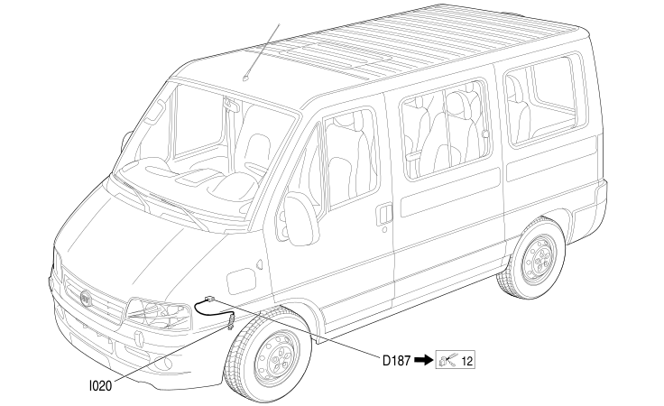

119 REVERSING SWITCH BRIDGE
- Path
- Electrical equipment > 2 WIRING > 119 REVERSING SWITCH BRIDGE
- Kind
- wiring harness
- Applies to
- engines: 2.3 JTD 16V, 2.8 JTD 8V; all production periods; only with equipment: Climate control
- Interactive page
- https://sloeber94.github.io/elrnDB-fDct/en/#/244002316
Applies to: engines: 2.3 JTD 16V, 2.8 JTD 8V; all production periods; only with equipment: Climate control
